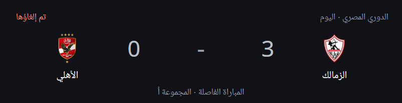
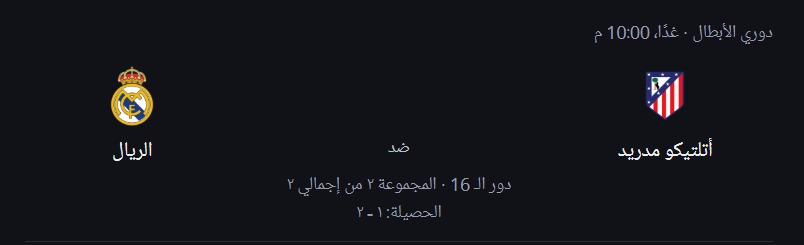

مباراة برشلونة اليوم

في مباراة الإياب من دور الـ16 لدوري أبطال أوروبا، التي أُقيمت اليوم، 11 مارس 2025، على ملعب لويس كومبانيس الأولمبي، تمكن نادي برشلونة الإسباني من التأهل إلى الدور ربع النهائي بعد تعادله السلبي مع بنفيكا البرتغالي، مستفيدًا من فوزه في مباراة الذهاب بهدف نظيف.
إلغاء مباراة الأهلي
تم إلغاء مباراة النادي الأهلي المصري ضد نادي الزمالك، والتي كانت مقررة اليوم، 11 مارس 2025، في تمام الساعة 9:30 مساءً بتوقيت مصر، ضمن المرحلة النهائية من الدوري المصري. يأتي هذا الإلغاء في ظل ظروف استثنائية لم يتم الكشف عنها بعد.
مباراة ريال مدريد القادمة
يستعد ريال مدريد لمواجهة أتلتيكو مدريد في إياب دور الـ16 من دوري أبطال أوروبا غدًا، 12 مارس 2025. ستقام المباراة على ملعب سانتياغو برنابيو في تمام الساعة 9:00 مساءً بتوقيت القاهرة. يسعى الفريقان لحسم التأهل إلى الدور ربع النهائي في هذه المواجهة المرتقبة.